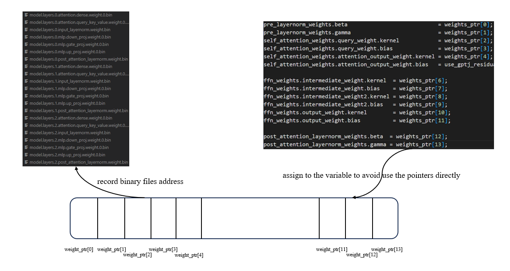
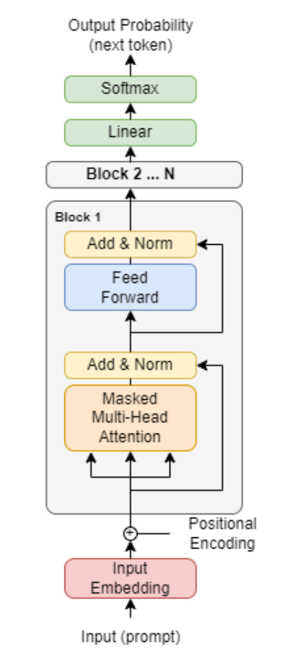

通过指针调度内存资源方案。
在加载大模型权重的过程中，每一层layer都有如下几种权重，此处以n代表层数index：
n.input_layernorm.weight.0.bin
n.attention.query_key_value.weight.0.bin
n.attention.dense.weight.0.bin
n.mlp.gate_proj.weight.0.bin
n.mlp.up_proj.weight.0.bin
n.mlp.down_proj.weight.0.bin
n.post_attention_layernorm.weight.bin
一共有32层。Llama源码对于权重的调度与实现，值得分析、总结、学习。
1. 通过一个指针数组来记录权重位置
1.1 base
1 2 3 4 struct LlamaDecoderLayerWeight { T* weights_ptr[14 ]; };
这一个指针数组，后面会记录每一份权重的位置信息。
1.2 LlamaDecoderLayerWeight.loadModel()
1 2 3 4 5 6 7 8 9 10 11 12 13 14 15 16 17 18 19 20 21 22 23 24 25 26 template <typename T>void LlamaDecoderLayerWeight<T>::loadModel (std::string dir_path, FtCudaDataType model_file_type){ FT_CHECK (is_maintain_buffer == true ); const std::string rank_spec = std::to_string (tensor_para_rank_); deviceFill (weights_ptr[0 ], (size_t )hidden_units_, (T)0.0 ); loadWeightFromBin<T>( weights_ptr[1 ], {(size_t )hidden_units_}, dir_path + ".input_layernorm.weight.bin" , model_file_type); loadWeightFromBin<T>(weights_ptr[2 ], {(size_t )hidden_units_, (size_t )(3 * hidden_units_ / tensor_para_size_)}, dir_path + ".attention.query_key_value.weight." + rank_spec + ".bin" , model_file_type); deviceFill (weights_ptr[3 ], (size_t )(3 * hidden_units_ / tensor_para_size_), (T)0.0 ); loadWeightFromBin<T>(weights_ptr[4 ], {(size_t )(hidden_units_ / tensor_para_size_), (size_t )hidden_units_}, dir_path + ".attention.dense.weight." + rank_spec + ".bin" , model_file_type); if (!use_gptj_residual_) { deviceFill (weights_ptr[5 ], (size_t )hidden_units_, (T)0.0 ); } }
诸如此类，把二进制文件放在每一个weight_ptr数组中，以便后续操作。
梳理如下：
Array Index
Layer Binary File
Weight Location
weights_ptr[0]
null
pre_layernorm_weights.beta
weights_ptr[1]
input_layernorm.weight.0.bin
pre_layernorm_weights.gamma
weights_ptr[2]
attention.query_key_value.weight.0.bin
self_attention_weights.query_weight.kernel
weights_ptr[3]
null
self_attention_weights.query_weight.bias
weights_ptr[4]
attention.dense.weight.0.bin
self_attention_weights.attention_output_weight.kernel
weights_ptr[5]
null
self_attention_weights.attention_output_weight.bias
weights_ptr[6]
mlp.gate_proj.weight.0.bin
ffn_weights.intermediate_weight.kernel
weights_ptr[7]
null
ffn_weights.intermediate_weight.bias
weights_ptr[8]
mlp.up_proj.weight.0.bin
ffn_weights.intermediate_weight2.kernel
weights_ptr[9]
null
ffn_weights.intermediate_weight2.bias
weights_ptr[10]
mlp.down_proj.weight.0.bin
ffn_weights.output_weight.kernel
weights_ptr[11]
null
ffn_weights.output_weight.bias
weights_ptr[12]
null
post_attention_layernorm_weights.beta
weights_ptr[13]
post_attention_layernorm.weight.bin
post_attention_layernorm_weights.gamma
2. 针对指针位置的初始化操作
2.1 分配显存空间
构造函数：调用其他两个函数
1 2 mallocWeights ();setWeightPtr ();
1 2 3 4 5 6 7 8 9 10 11 12 13 14 15 16 17 18 19 20 21 template <typename T>void LlamaDecoderLayerWeight<T>::mallocWeights (){ deviceMalloc (&weights_ptr[0 ], hidden_units_); deviceMalloc (&weights_ptr[1 ], hidden_units_); deviceMalloc (&weights_ptr[2 ], hidden_units_ * 3 * hidden_units_ / tensor_para_size_); deviceMalloc (&weights_ptr[3 ], 3 * hidden_units_ / tensor_para_size_); deviceMalloc (&weights_ptr[4 ], hidden_units_ / tensor_para_size_ * hidden_units_); if (!use_gptj_residual_) { deviceMalloc (&weights_ptr[5 ], hidden_units_); } deviceMalloc (&weights_ptr[6 ], hidden_units_ * inter_size_ / tensor_para_size_); deviceMalloc (&weights_ptr[7 ], inter_size_ / tensor_para_size_); deviceMalloc (&weights_ptr[8 ], hidden_units_ * inter_size_ / tensor_para_size_); deviceMalloc (&weights_ptr[9 ], inter_size_ / tensor_para_size_); deviceMalloc (&weights_ptr[10 ], inter_size_ / tensor_para_size_ * hidden_units_); deviceMalloc (&weights_ptr[11 ], hidden_units_); deviceMalloc (&weights_ptr[12 ], hidden_units_); deviceMalloc (&weights_ptr[13 ], hidden_units_); }
mallocWeights()方法在为权重分配显存空间。
2.2 将权重地址赋值给成员变量
在后续的开发中，一直使用指针进行操作，实际上是很麻烦的事情。
pre_layernorm_weights.gamma总比weight[1]的用法要更为人所接受 ，同时也不容易出错。
所以，开发者就想到了将指针地址赋值给类中的成员变量，从今以后通过对成员变量进行操作进而间接对内存中权重进行操作 ，而不至于直接通过指针进行操作。
所以有：
1 2 3 4 5 6 7 8 9 10 11 12 13 14 15 16 17 18 19 20 21 22 23 24 25 26 27 28 29 30 31 32 33 34 35 36 37 38 39 40 41 struct LlamaDecoderLayerWeight { LayerNormWeight<T> pre_layernorm_weights; AttentionWeight<T> self_attention_weights; LayerNormWeight<T> post_attention_layernorm_weights; FfnWeight<T> ffn_weights; }; template <typename T>struct LayerNormWeight { const T* gamma = nullptr ; const T* beta = nullptr ; }; struct AttentionWeight { DenseWeight<T1, T2> query_weight; DenseWeight<T1, T2> key_weight; DenseWeight<T1, T2> value_weight; DenseWeight<T1, T2> attention_output_weight; DenseWeight<T1, T2> ia3_key_weight; DenseWeight<T1, T2> ia3_value_weight; }; template <typename T1, typename T2 = T1>struct FfnWeight { DenseWeight<T1, T2> gating_weight; DenseWeight<T1, T2> intermediate_weight; DenseWeight<T1, T2> intermediate_weight2; DenseWeight<T1, T2> output_weight; DenseWeight<T1, T2> ia3_weight; }; template <typename T1, typename T2 = T1>struct DenseWeight { const T1* kernel = nullptr ; const T2* bias = nullptr ; const T1* fp8_bias = nullptr ; const T1* sp_kernel = nullptr ; bool fuse_gemm_bias = false ; };
有了上面的基础，接下来可以看构造函数中第二个调用的函数：
1 2 3 4 5 6 7 8 9 10 11 12 13 14 15 16 17 18 19 20 21 template <typename T>void LlamaDecoderLayerWeight<T>::setWeightPtr (){ pre_layernorm_weights.beta = weights_ptr[0 ]; pre_layernorm_weights.gamma = weights_ptr[1 ]; self_attention_weights.query_weight.kernel = weights_ptr[2 ]; self_attention_weights.query_weight.bias = weights_ptr[3 ]; self_attention_weights.attention_output_weight.kernel = weights_ptr[4 ]; self_attention_weights.attention_output_weight.bias = use_gptj_residual_ ? nullptr : weights_ptr[5 ]; ffn_weights.intermediate_weight.kernel = weights_ptr[6 ]; ffn_weights.intermediate_weight.bias = weights_ptr[7 ]; ffn_weights.intermediate_weight2.kernel = weights_ptr[8 ]; ffn_weights.intermediate_weight2.bias = weights_ptr[9 ]; ffn_weights.output_weight.kernel = weights_ptr[10 ]; ffn_weights.output_weight.bias = weights_ptr[11 ]; post_attention_layernorm_weights.beta = weights_ptr[12 ]; post_attention_layernorm_weights.gamma = weights_ptr[13 ]; is_maintain_buffer = true ; }
反思：上面这种方法，方便之处在哪里呢？
使用同一片内存空间，节约空间开销，避免反复为权重开辟新空间
底层是一个指针数组，但是通过成员变量的方式对这些内容进行调用，实际上非常高效而不至出错
分配显存空间、赋值给成员函数、加载模型权重 ，这些都可以异步进行。它的执行顺序是：先占据内存空间分配指针地址，然后占据显存空间分配显存地址，最后再在固定的位置加载模型权重。

layer weight design
3. 宏观：整个权重系统的设计概览
3.1 32个层的权重设计
1 2 3 4 5 6 7 8 9 10 11 12 13 14 15 16 17 18 19 20 21 22 23 24 25 26 27 28 29 30 31 32 33 34 template <typename T>struct LlamaDecoderLayerWeight {public : LlamaDecoderLayerWeight () = default ; LlamaDecoderLayerWeight (const int hidden_units, const int inter_size, const int tensor_para_size = 1 , const int tensor_para_rank = 0 , const bool use_gptj_residual = true ); ~LlamaDecoderLayerWeight (); LlamaDecoderLayerWeight (const LlamaDecoderLayerWeight& other); LlamaDecoderLayerWeight& operator =(const LlamaDecoderLayerWeight& other); void loadModel (std::string dir_path, FtCudaDataType model_file_type) LayerNormWeight<T> pre_layernorm_weights; AttentionWeight<T> self_attention_weights; LayerNormWeight<T> post_attention_layernorm_weights; FfnWeight<T> ffn_weights; private : int hidden_units_; int inter_size_; int tensor_para_size_; int tensor_para_rank_; bool use_gptj_residual_; const int attention_dense_bias_weight_id = 5 ; bool is_maintain_buffer = false ; T* weights_ptr[14 ]; void setWeightPtr () void mallocWeights () };
首先是构造函数区，提供一系列构造方法。
然后是loadModel()方法，这个方法并不在该类中被调用。因为这个类仅仅是针对单个层做出的设计 。后面会有一个vector<LlamaDecoderLayerWeight<T>*>*的指针，专门来掌管32个layers。
再是四个核心成员变量，在后续的开发中，实际上都是通过他们对权重进行读取访问，这些成员类的内部实际上也是指针，通过他们的成员指针对权重位置进行记录并赋值，进而在后续开发中仅仅需要关注名字即可，而不是直接通过weights操作内存。实际上这样的设计理念在后面也可以看到：T* weights_ptr[]指针数组是一个private声明的成员变量，不能被外部所访问。
下面的几个private成员变量，其实是为了分配cuda显存空间而存在的。只有知道他们的值，才能够正确地分配显存空间。
最底部的是两个成员方法，第二个分配显存空间 ，第一个把指针的值赋值给成员对象的内部成员变量（指针）中 ，以便后续访问。
3.2 外部权重层的设计
因为一共有32个transfromer layer，除此之外还有其余的层，需要一个更大的类来进行包裹。

decoder-only structure
如果说我们刚才完成了中间block部分权重的设计，接下来我们需要把剩下部分的权重也包含在内。也就是外部的LlamaWeight类
LlamaWeight的内部代码此处不放出，因为实在比较占据空间，此处可以略讲。
实际上在之后的forward函数调用的过程中，函数的参数永远是指针：
Llama.h:
1 2 3 void forward (std::unordered_map<std::string, Tensor>* output_tensors, const std::unordered_map<std::string, Tensor>* input_tensors, const LlamaWeight<T>* gpt_weights)
LlamaDecoder.h:
1 2 3 virtual void forward (std::vector<Tensor>* output_tensors, const std::vector<Tensor>* input_tensors, const std::vector<LlamaDecoderLayerWeight<T>*>* decoder_layer_weights)
在这里要进行解读：llama.h的成员变量中，并不包含weights，相反LlamaWeight类是在llama类被使用的过程中，直接include头文件然后临时创建的，也就是说llama本身其实是不带这个类的。所以在传参的时候：gpt.forward(&output_tensors, &input_tensors, &gpt_weights);
进一步，在forward()内部进行传参的时候，同理：
1 gpt_decoder_->forward(&decoder_output_tensors, &decoder_input_tensors, &gpt_weights->decoder_layer_weights);
在实际工程中，参数大多数会是指针，而传进来的变量，也一般都会以取自身的地址的方式传入。 有关该方案的原因分析，可以看笔者上一篇博文。
如果您喜欢此博客或发现它对您有用，则欢迎对此发表评论。 也欢迎您共享此博客，以便更多人可以参与。 如果博客中使用的图像侵犯了您的版权，请与作者联系以将其删除。 谢谢 ！